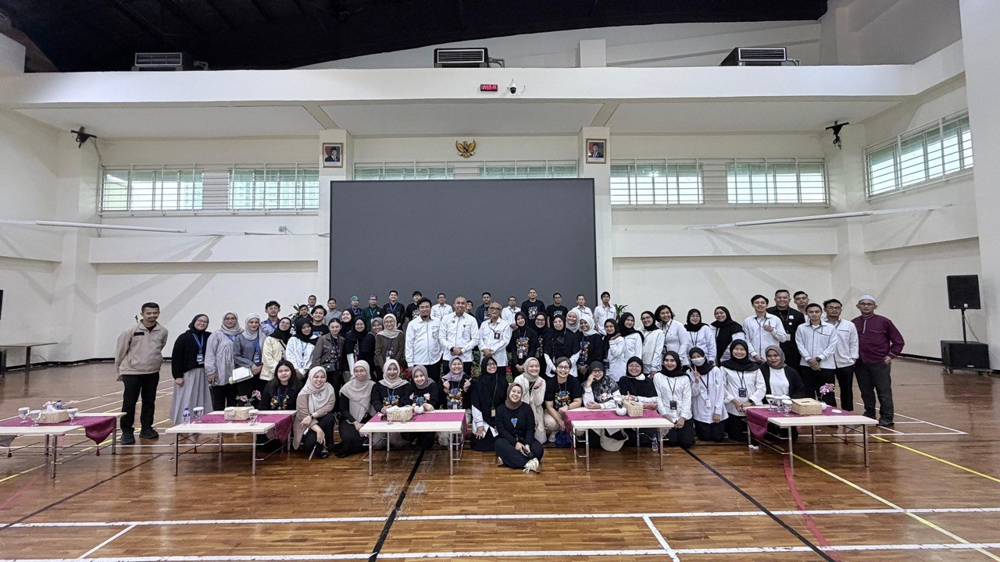
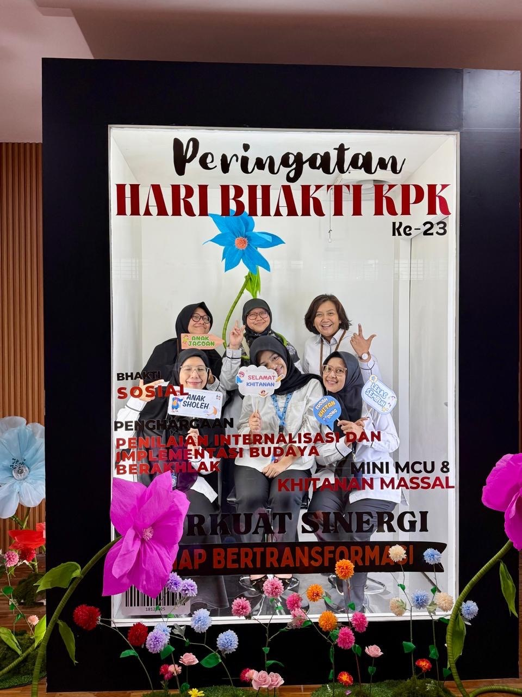
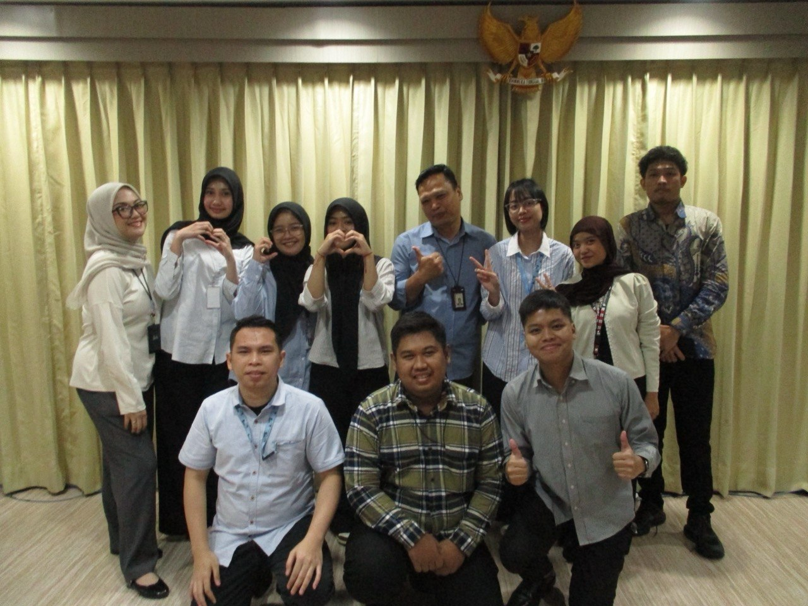
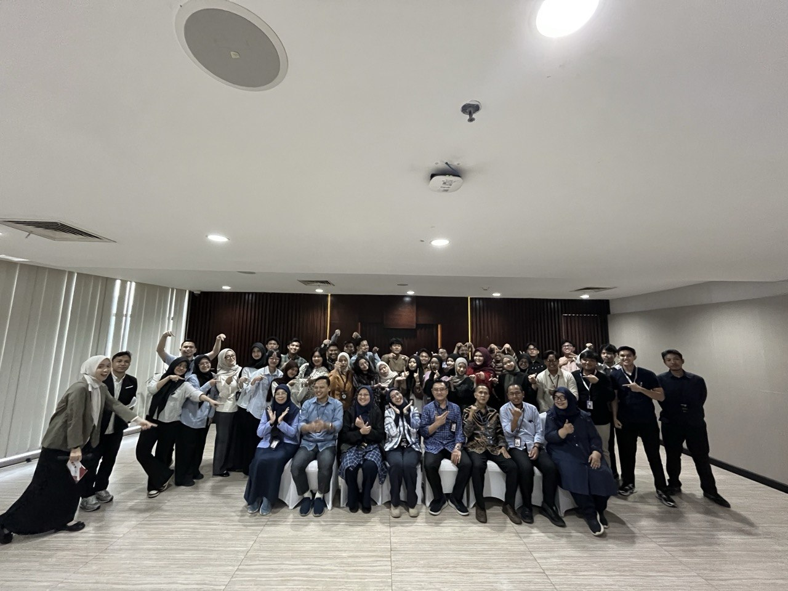
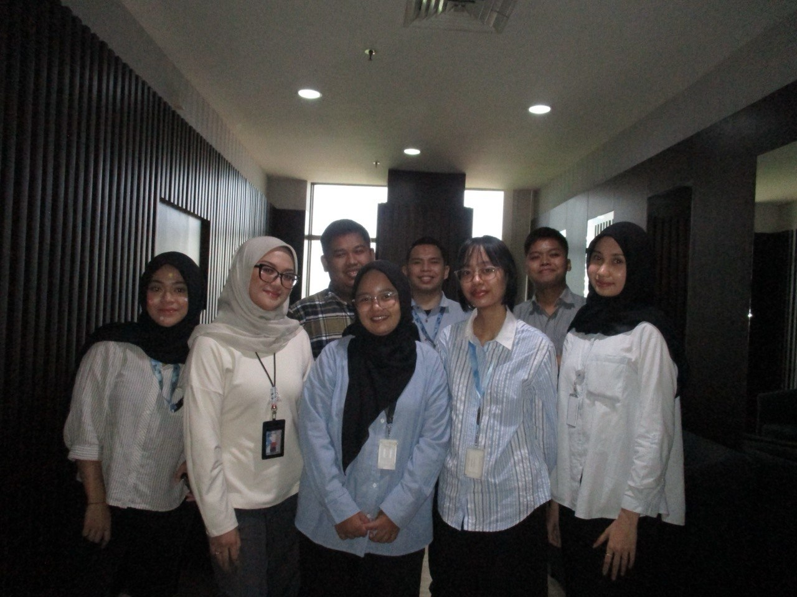
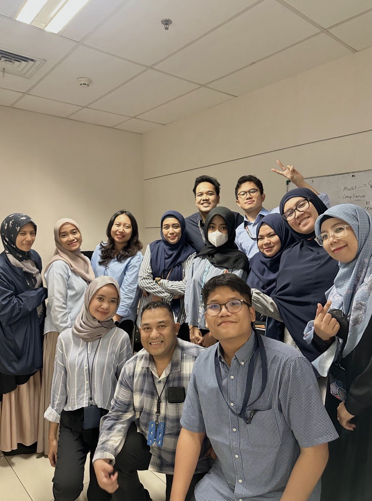
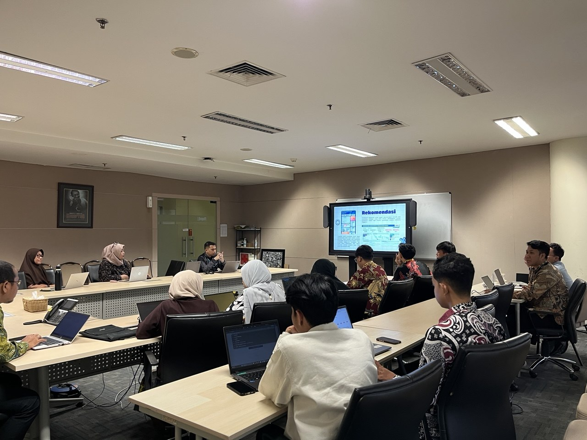

Hi, I'm Rizqi Indah Pratiwi
Information Technology Graduate
IT graduate with experience in web development using React.js, Laravel, and JavaScript. Worked on projects for KPK and Diskominfo, with additional experience in QA testing and data analysis.
About Me
Web Developer & Quality Assurance Enthusiast
As a developer focused on Front-End Engineering, I combine coding expertise with Quality Assurance (QA) methodologies by conducting thorough User Acceptance Testing (UAT) and functional testing to ensure system reliability. Supported by experience as a Data Analyst, I am skilled in processing and analyzing internal attendance data with high accuracy to support strategic HR decision-making.
Internship Experience
Frontend Developer & Data Analyst Intern
Komisi Pemberantasan Korupsi (KPK) - Human Resources Bureau
Developed 2 HR web apps (Satu Layanan SDM & Data Formasi Jabatan) using React.js, integrated REST APIs, and managed UAT. Additionally analyzed employee attendance data and supported internal committee roles.
Front-End Developer Intern
Dinas Komunikasi Informatika dan Persandian Kota Yogyakarta
Developed a web-based monitoring dashboard using HTML, CSS, and JavaScript to digitalize three main reporting processes, successfully reducing staff manual workload by 40%.
My Skills
Kompetensi & Perangkat Lunak
Core Competencies
Software & Frameworks
My Projects & Certifications
Core System Project Portfolio
Komisi Pemberantasan Korupsi (KPK) - Human Resources Bureau
Contributed to developing 2 web-based applications, Satu Layanan SDM Portal and Data Formasi Jabatan, utilizing React.js to build responsive and interactive interfaces. Integrated RESTful APIs, conducted User Acceptance Testing (UAT), and processed attendance data using basic analysis to support HR decision-making.
Other Roles: Served as Committee Secretary 3 for the KPK Social Event (Mass Circumcision), and acted as Minutes-Taker, Documentarian, and Technical Operator for internal work meetings.
Dinas Kominfo Kota Yogyakarta
Developed front-end web-based monitoring systems using HTML, CSS, and JavaScript to digitalize manual processes, improving efficiency and data security. Collaborated with UI/UX and backend teams and actively participated in stakeholder meetings.
Anasera Center Web Portal
Developed a full-stack website using HTML, CSS, JavaScript, Laravel, and MySQL to support the operational workflow of a child development therapy clinic. Features include service management, online registration, reservation history, and secure authentication via Laravel middleware.
Library Management System
A web-based library management system featuring full CRUD functionality for managing books, categories, staff, and borrowing records. Implemented separate role-based access control dashboards for administrators and borrowers.
MOS: Excel 2019 Associate
Earned an official Microsoft Office Specialist certification in Excel 2019 Associate, validating advanced skills in spreadsheet management, complex formulas, data analysis, custom visualization, and professional technical reporting.
TOEIC English Proficiency
Official English proficiency certification with a score of 617. Demonstrates strong listening and reading competencies at an intermediate-upper working level tailored for professional corporate environments.
Get In Touch
Let's Connect for System Collaboration
Feel free to reach out for collaboration in front-end development, software testing (UAT), or data processing. I'm open to freelance and project opportunities.






